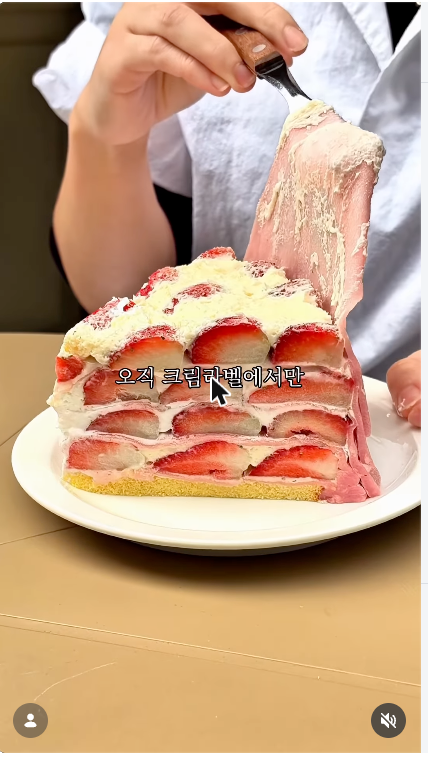
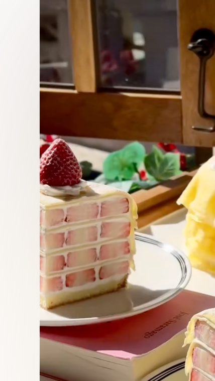
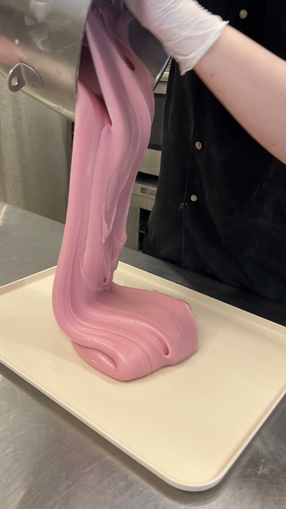
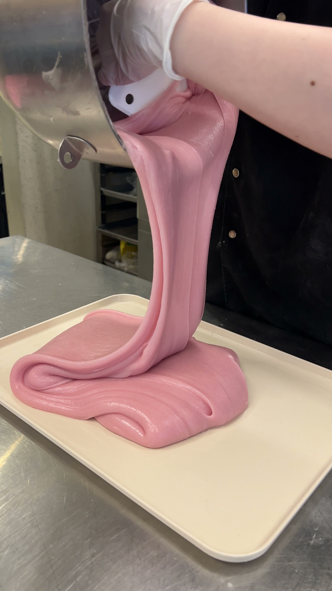
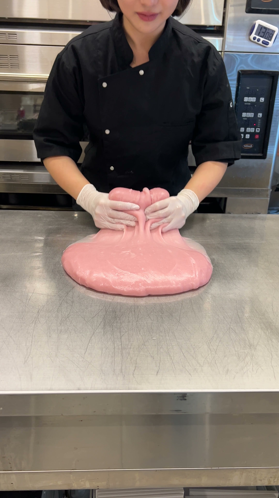
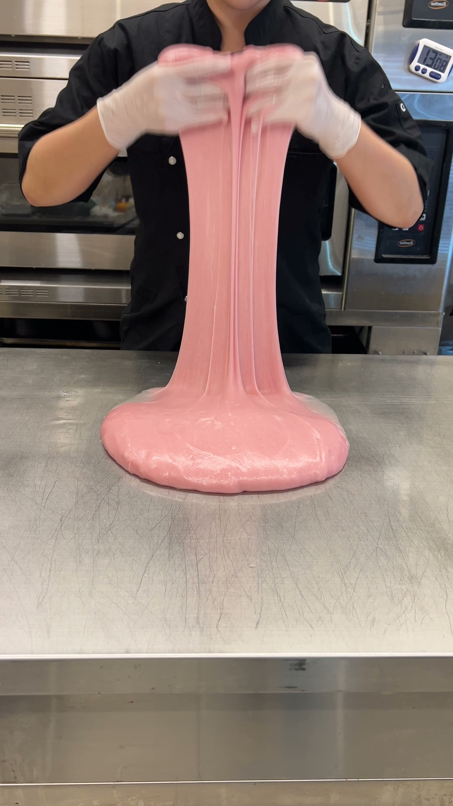

1출시 일정
1차 · 코엑스점
10월 29일 (목)
12:00 출시
별마당 도서관 1층
2차 · 소구점 전매장
11월 16일
전매장 출시
전국 소구점 동시 출시
한정수량 · 선착순 20개
180번 반죽 테스트 끝에 탄생한
국내최초 생딸기 모찌 크레이프
커스터드크림 · 백앙금크림 · 우유크림
3종 크림과 생딸기 조합
생딸기 통모찌가 데코로 통으로 들어감 (1판에 생딸기모찌 3개)
홀케익은 별도 예약만 가능 · 산더미 과일케익 맛집으로 유명한 크림라벨
📌 소구점 공식 게시물 →
2레퍼런스 이미지 ( 꼭 숙지해 주세요!)

▲ 단면 완성샷 — 딸기·크림이 겹겹이 보이도록

▲ 단면 슬라이스 — 층층이 쌓인 딸기 단면 표현 목표
3장면 구성
완성샷에서 단면이 층층히 잘 보여지는 장면 또는
케이크 단면이 보여진 채로 찢는 장면 (늘어나는 게 잘 보이게)
혹은 딸기 떡반죽이 길게 늘어나는 장면
⚡ 반으로 자르는컷 / 늘리는컷 / 케이크 데코로 얹는 장면 — 필수
후킹 키워드 (유행 비교문구 중 택1)
D
선생님 진도가 빨라요 고디바,한정선 겨우 따라 갔더니 이번엔
E
초코찹쌀떡(과일찹쌀떡) 유행 겨우 따라 갔더니 이번엔
↓ 국내최초 소구 멘트로 연결
180번 반죽 테스트 끝에 탄생한, 딸기 모찌가 통으로 들어간
국내최초 생딸기 모찌 크레이프
① 180번 반죽 테스트 끝에 탄생한


▲ 믹서에서 쏟아지는 쫀득한 분홍 반죽
② 매일 아침 직접 반죽한 쫀득한 딸기 모찌를 얇게 펴고


▲ 직접 반죽·늘리는 장면 — 오른쪽이 썸네일 후보
③ 우유크림 / 커스터드크림 / 백앙금크림 3종 크림을 발라
④ 신선한 생딸기를 층층이 쌓아
⑤ 딸기 모찌를 통으로 얹어 (케이크 데코로 얹는 장면 클로즈업)
⑥ 완성한 국내최초 생딸기 모찌 크레이프
딸기 크레이프 단면 클로즈업
CTA 멘트:
하루 선착순 20개 한정수량 판매
소문나기 전에 / 웨이팅 전에 / 한정선·고디바·올기떡 다음 / 대신
줄서기 전에 빠르게 다녀오세요!
진짜 생딸기 모찌가 들어가요!
반으로 자르는 컷 · 늘리는 컷 · 케이크 데코로 얹는 장면을 꼭 찍어주세요.
4꼭 찍어야 하는 장면
케이크 단면 · 찢는 장면
- 단면이 잘 보여지는 상태로 양옆으로 찢는 장면
- 포크로 양 옆으로 찢는 장면
- 포크를 위에서 아래로 눌러 생딸기가 튀어나오는 장면
- 딸기 모찌 반죽이 길게 늘어나는 장면
- 생딸기 통모찌를 케이크 데코로 얹는 장면 (클로즈업)
만드는 장면
- 모찌떡 늘리는 장면 (제공)
- 모찌를 얇게 피는 장면
- 모찌를 케이크 위에 덮는 장면
- 우유크림 바르는 장면
- 백앙금크림 바르는 장면
- 커스터드크림 바르는 장면
- 딸기를 놓는 장면 (최대한 가득 채워진 상태에서)
- 케이크 반 자르는 장면
- 케이크 단면이 잘 보여지는 장면 (반으로 갈라주시거나 한 조각 빼서 들어올리거나)
- 케이크 한판을 앞으로 보여주는 장면
매장 방문 유도 CTA (코엑스점)
- 줄 섰으면 줄 선 장면
- 줄 없으면 매장 외부 or 계산대에서 계산하는 장면
- 케이크 한판을 매장 앞에서 내미는 장면
- 별마당 도서관 1층 코엑스 현장을 담은 현장감 있는 컷